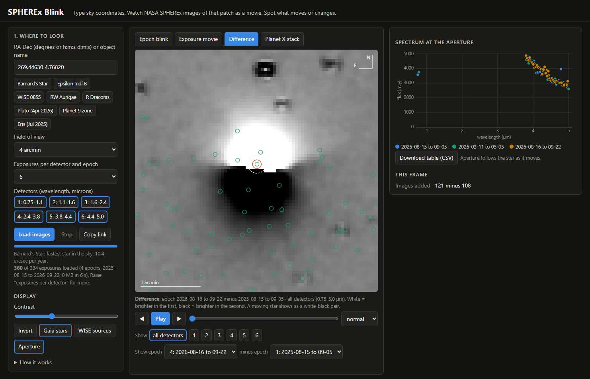
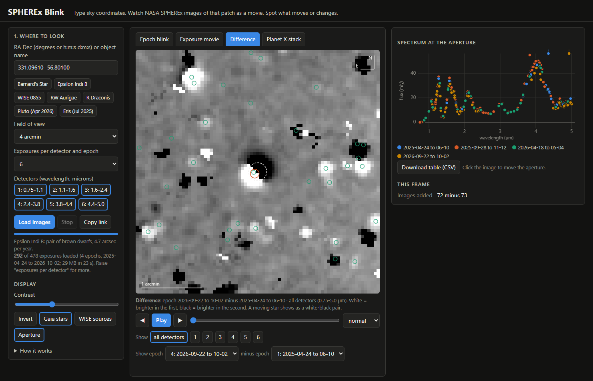
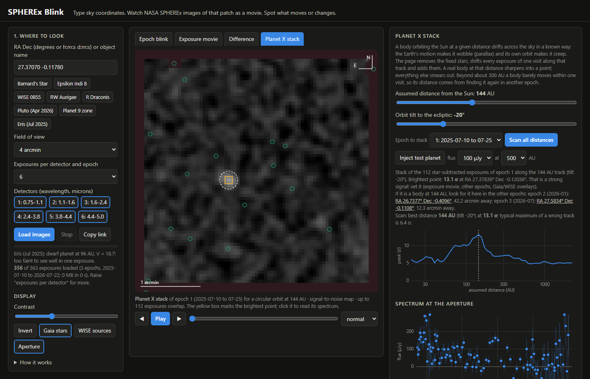

Type sky coordinates. Watch the infrared sky move.
Hunt for Planet X.
Challenge: Planet X and SPHEREx
Team: TEAM NAME
Members: MEMBER NAMES

SPHEREx images public so far
April 2025 – October 2026, each 65 MB
wavelength channels, 0.75–5.0 µm
Enter coordinates or a name. SPHEREx Blink finds every SPHEREx image of that spot and shows how it changes. For students, citizen scientists and astronomers — no login, no install.
One deep image per visit, or every exposure in time order.
One epoch minus another: fixed stars vanish, movers become white-black pairs.
Click any point: its 102-channel spectrum, built on the fly, per epoch.
Add all images along the path a distant planet would follow.
Also: Gaia and WISE star overlays · choose field of view and detectors · shareable link with coordinates in the URL · download spectra as CSV.

Epsilon Indi B: the brown dwarfs move between epochs (left); their spectrum shows methane and water bands (right).
Sky index. We read 1 kB of every SPHEREx image to record where it points: 1.6 M images in small files.
Only the pixels you need. The browser downloads just the rows that cover your patch, straight from NASA's public archive: 0.5 MB instead of 65 MB per image.
Science in the browser. Sky coordinates, wavelength, sky subtraction, stacking, differences and photometry, all in JavaScript.
No server. Free to host on GitHub Pages; a new data release needs one script run.
Positions checked against astropy to a billionth of a pixel.
| NASA SPHEREx | Level-2 spectral images, releases DR1 and QR3, from the NASA/IPAC Infrared Science Archive (public cloud bucket). Every image and spectrum in the tool. |
| ESA Gaia DR3 | Positions and motions of stars, drawn on every frame at that frame's date (partner agency data). |
| NASA WISE | CatWISE2020 infrared sources as a second overlay. |
| JPL Horizons, IRSA | Known positions of Pluto and Eris, used to test the Planet X search. |
| WiseView | The WISE blink tool named in the challenge (byw.tools): our model for SPHEREx. |
| Tools | JavaScript, Python with astropy, Node.js, GitHub Pages. Code written with the help of an AI assistant (Claude). |
Honest limit: the predicted Planet Nine is 2–3 magnitudes fainter than one SPHEREx visit reaches. We claim no discovery; the reach grows with every sky pass.

Planet X stack: Eris appears in the yellow box after adding 112 exposures along its path.
Code and tool: github.com/Shamil116/spherex-blink
Slides prepared with AI assistance (Claude). Images are screenshots of the tool showing real NASA SPHEREx data. Not affiliated with or endorsed by NASA.